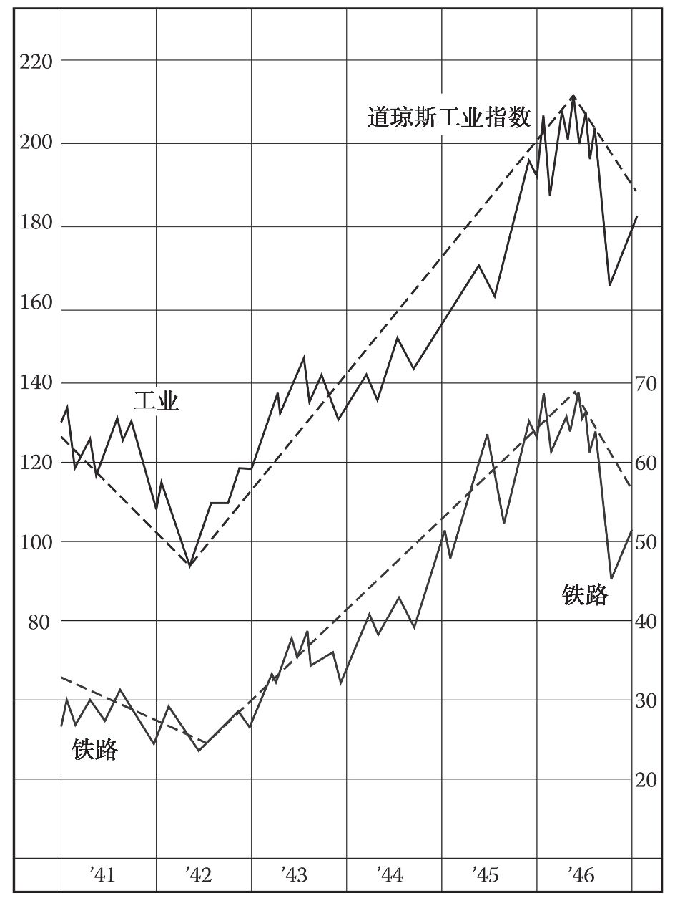
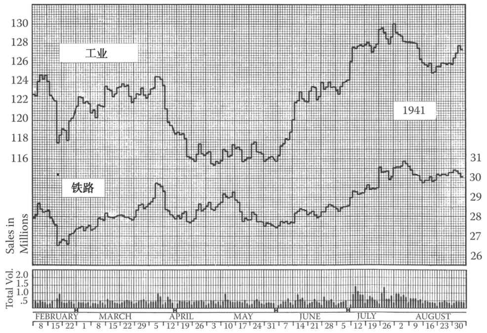
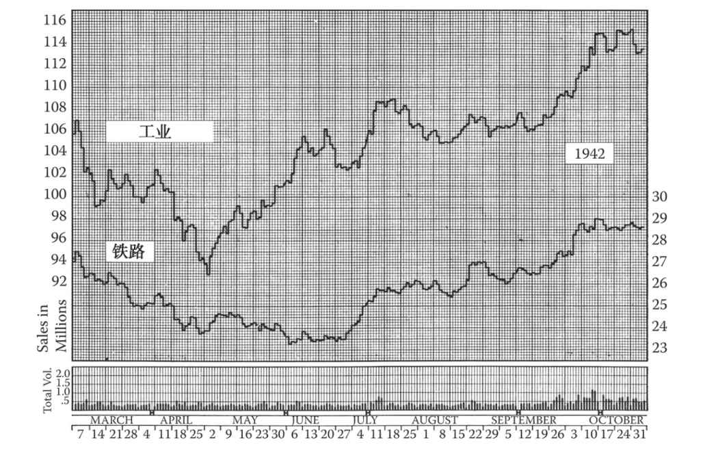
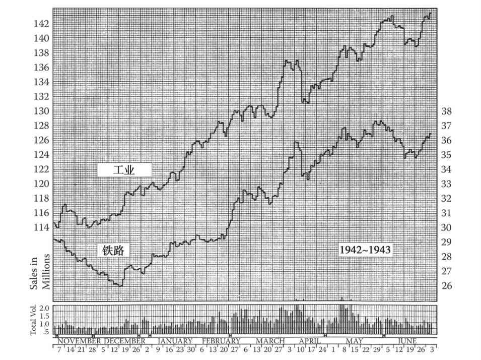
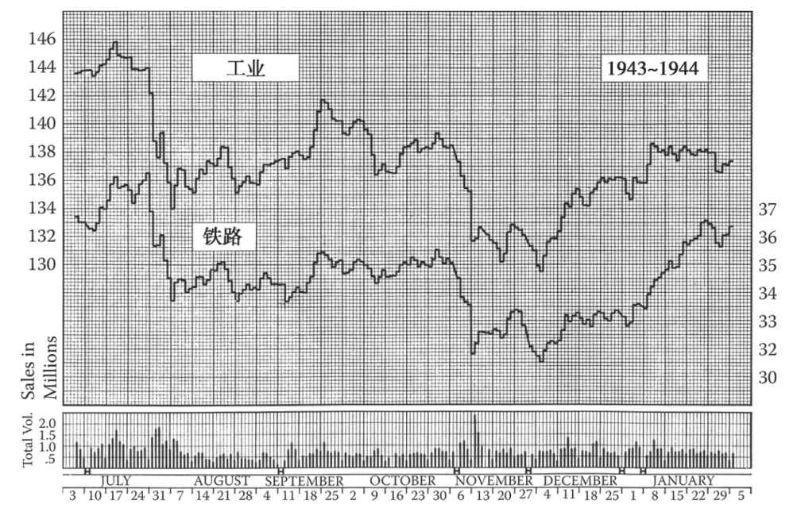
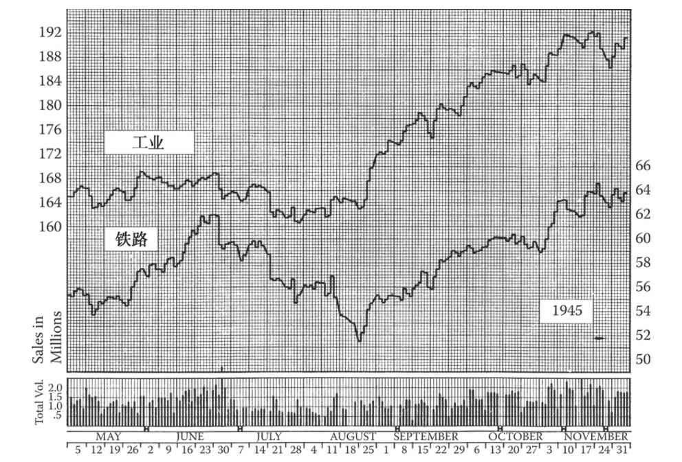
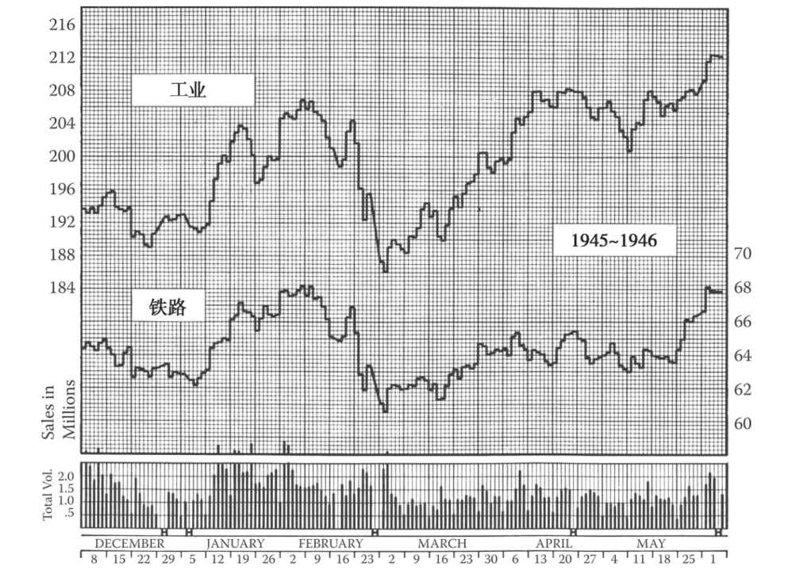
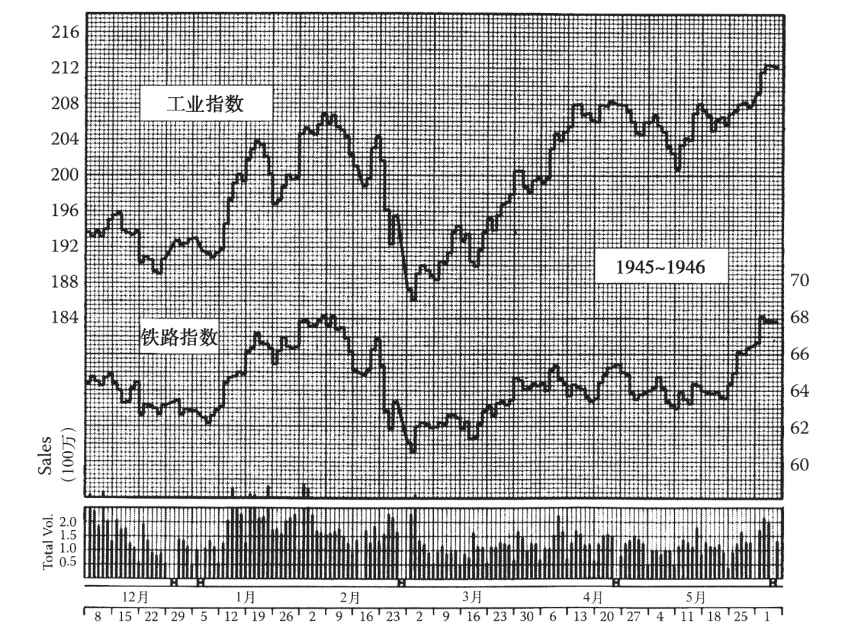
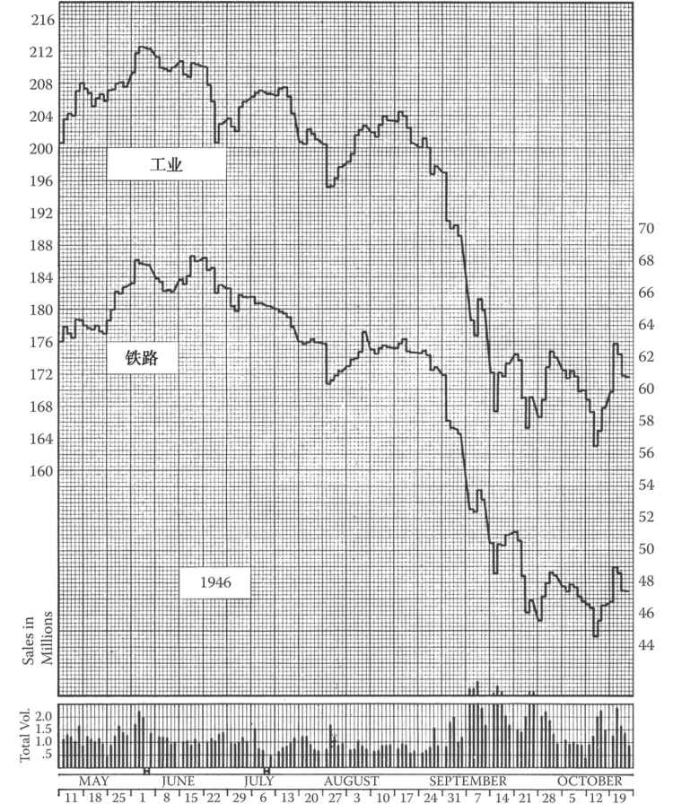

附录A 实践中的道氏理论
第10版编者按：本附录内容在第9版中为第4章。
第9版编者按：有些读者读到这章可能会摇头并问编辑为什么不删去这章，这是因为本章就像老式的鳕鱼肝油一样，是一方良药。那些不仅希望认真学习道氏理论，而且希望学习长期投资的学生会喜欢这一章。如果读者对道氏理论或者长期投资完全没有兴趣，也可以跳过这一章，等过些年头他更加睿智些的时候再来阅读。
如果此刻读者对前文所述的股市知识一无所知的话，那么可能会感到有些吃力。道氏理论像个胖子，很难一口吞下。我们故意在之前章节颠倒了一下道氏理论原则的顺序，这样读者更容易理解。事实上，这12条原则并不是同等重要，其中最核心的是第2、3、4、5、8、10、11条。第1条当然是其基本假设，是所有信条的哲学基础。其余的6、7、9、12点可以作为背景材料帮助理解。理论上来说，严格遵循最核心的那几条原则就足够了。（请参见图A-1～图A-9。）
但是，对道氏理论的利用终究还是取决于对它的解读。你可能对这些原则倒背如流，但在实践中却仍然困惑不解。我们可以更好地组织该理论的内容，并通过长期追踪市场动向，观察道氏理论家当时对市场的解读，来更好地理解道氏理论。从这个目的出发，我们可以回看1941年年底到1947年年初的市场，因为这个时段跨越了一个熊市末期、一个完整的牛市周期和另一个熊市的部分时间，还包括大部分道氏理论需要解释的市场现象。

图A-1 此波浪图显示出了道琼斯工业平均指数和道琼斯铁路业平均指数从1941年1月至1946年12月的所有中线行情和一些较长的短线趋势。工业指数价格在左轴，铁路业指数价格在右轴
A.1 5年道氏解读
图A-2浓缩了两只道琼斯平均指数从1941年1月1日到1946年12月31日的走势，其中大多数的短线趋势被忽视，而被确认的长线和中线趋势都得到了体现。后续详细讨论中，部分交易历史还有完整的日线图进行补充。

图A-2 1941年2月1日至8月31日，道琼斯工业指数和铁路业平均指数的每日收盘价和成交量。每一根竖线代表的是当天收盘价与前一个收盘价之间的变化幅度
1941年市场在一个短线反弹中开启。当指数于1940年春崩盘时道氏理论发出了长线熊市信号，1941年时市场仍处于熊市中。在1941年5月的恐慌期结束后，出现了一波中线修复行情，持续了5个多月，并收复了平均指数跌幅的一半，工业平均指数从6月10日收盘时的111.84点涨到11月9日收盘时的138.12点，铁路业指数则从5月21日的22.14点涨到11月14日的30.29点（在这一波漫长的熊市中线行情中，成交量似乎也跟随价格上涨，使得很多人没有严格遵循第一原则而相信这是新一轮牛市的开始，解释了我们在第3章“成交量”中讲的观点）。但是，市场在达到11月高点后再次掉头向下，之后在年底出现了一轮小反弹，工业指数和铁路业指数在1942年1月10日分别达到133.59点和29.73点，然后在2月14日再次分别跌至117.66点和26.54点。
A.2 第一次严峻考验
接下来的几个月值得我们好好研究，因为在这段时间里道氏理论经受了严峻的考验。图A-2 [1] 显示了这两只平均价格指数在7个月的时间内（1941年2月1日至8月1日）的每日价格波动、收盘价和每日总成交量。不过分析这些数据之前，让我们先看一下2月14日的市场表现。2月14日之前，市场曾在1940年的5、6月份触底。随后，长时间的次级修复将道琼斯工业指数和铁路业指数分别拉升了26.28点和8.15点。在之后的3个月里，这两只指数又分别回落了20.46点和3.75点，巧的是，这次回落包含了3个明显的短线波动阶段。考虑到此次回落的时间跨度和价格振幅（与之前的次级修复相比，铁路业指数下跌46%，工业指数下跌78%），我们可以将其定义为一个中线趋势。然后，价格又开始回升了，这让道氏理论家们密切关注。如果两只指数持续回升，双双突破之前11月出现的高位（分别为138.12点和30.29点），那道氏理论就发出了新一轮牛市到来的信号。这意味着应该立即进场，重新投入1940年5月撤出的资金。当然，他们还有必要将1940年5、6月的底部标识为熊市的终点，将之后的市场波动（直至11月）定义为新牛市的第一次主升运动，还要将持续至次年2月的回落标识为牛市的第一波次级修正。但注意，上一章（第10版编者按：第3章）的第12条原则也适用于此情形。所以，除非道氏理论发出一个确定的信号，否则此时的长线趋势仍是看跌。
现在，让我们分析下图A-2 [2] 。工业平均指数的反弹持续了6周，并于4月3日达到124.65点。同日，铁路业指数达到29.75点，涨幅是工业指数的2倍。但这两只指数都未突破上一年11月的高位。之后工业指数迅速滑落，短短2周就跌破了2月的低位，并在5月1日跌至115.30点。因此，工业指数仍处于中期跌势。但铁路业指数的表现则截然相反：该指数由4月3日的高点回落至27.72点，小幅回升后再次下挫，于5月31日收于27.43点。这张图的有趣之处就在于，两个指数出现了分歧，无法互相印证；铁路业指数在两个时点都拒绝印证工业指数的跌势。
A.3 未能相互印证
当价格在6月开始攀升时，许多股评家将这种“未能相互印证”的现象看作牛市即将到来的预兆，而那些想当然的投资者又开始大谈牛市的到来。不幸的是，金融圈喜欢夸大分歧的技术意义，特别是当这种分歧能够被曲解为积极信号时。事实上，当一个指数拒绝确认另一个指数时，道氏理论根本不可能发出任何积极信号。有时，分歧出现在长线趋势反转时（历史上曾出现过几次这种情况，最著名的一次发生于1901～1902年，稍后我们还会分析另一次分歧），也会出现在长线趋势尚未反转时。我们在这里讨论的就是第二种情况。
所以，对于道氏理论家来说，如果只考虑长线趋势，那么1941年5月底的市场环境就和2月14日的如出一辙。股市在6月和7月一路上涨，铁路业指数在8月1日见顶于30.88点，工业指数则在7月28日见顶于130.06点（可以比较这两个指数在1940年11月的顶点）。之后，价格急速下滑，恐慌情绪在珍珠港事件时达到顶点。工业指数跌破了上一次熊市的底部（111.84点，1940年6月10日），但铁路业指数再一次拒绝跟随工业指数，尽管此时两只指数已经明显跌破了此前2月14日的中线底部。
下一段重要时期开始于1942年4月。鉴于1941年12月至次年4月没有出现有关道氏理论的问题，我们可以暂且跳过这段时期的图表。1月短期上涨后，股价进入下跌周期，但成交量并未随跌势（短期下跌）扩大。卖盘枯竭，民众纷纷避开股市，市场情绪符合熊市最后一个阶段的特征。
图A-3 [3] 展示了这两只平均指数自1942年3月2日至10月31日的每日价格变动。铁路业指数和工业指数的新低位（1940年以后）分别出现于4月24日（23.72点）和4月28日（92.92点）。之后，这两只指数出现了显著的分歧：上涨仅仅7天后，铁路业指数就开始下跌，而工业指数则继续攀升，交投持续低迷（事实上，成交量直至9月下旬才有明显扩大的迹象）。6月1日，铁路业向下突破至新的低点，6月2日收于23.31点。6月22日，工业指数看似将被再次拉低，但仅仅几天后，市场就开启了几个月来幅度最大的一次回升，不仅将工业指数推升到新的高点，也收复了铁路业指数4～5月的全部失地。交投迅速恢复，其中一天的换手率创1月以来新高。第9版编者按：请注意这个信号，这应该引起我们的关注。

图A-3 1942年3月2日至10月31日，道琼斯工业指数和铁路业平均指数的每日收盘价和成交量。此后，股市进入了一个长达4年的牛市
A.4 大逆转的迹象
此时道氏理论家又非常警惕了。股市显然正在呈现一波中线上扬，但在新的信号出现之前，还只能认为那是熊市中的一波次级行情。可是长线跌势已经维持了近3年，接近历史最长纪录，且最近一轮下跌抛压极轻，指数无量下行，因此这波次级行情很有可能演变成新的长线趋势。类似的情景在12个月前出现过，但现在股价更低，市场“感觉”不同以往。消息面仍未见起色，但道氏理论关心的只是由股市自身呈现出来的信息（股价反映了一切信息）。在任何情况下，投资者要做的只是等待、观望，让市场按自己的方式和节奏发出信号。
7月初，道琼斯工业平均指数开始“原地踏步”；在随后的11周里，该指数在5个点的范围内波动，呈现出典型的横盘走势，最终于9月末向上突破。与此同时，道琼斯铁路业平均指数攀至新高。到11月2日，这两个指数都已突破了此前1月的反弹高点。此时一些道氏理论家兴高采烈地宣布牛市信号已经出现，他们的理由具体如下。
（1）4～6月，指数筑底，成交量极度萎缩，显示出调整结束阶段的典型特征。（正确无误。）
（2）那段时期，铁路业指数坚守在1940年5月收盘点位上方，未追随工业指数创新低。（正确，但技术意义不大。后文详述。）
（3）工业指数在横盘一段时间后，已向上突破。（正确，但横盘时间较短，故技术意义不大。）
（4）4个月来，铁路业平均指数的短线高点和低点持续抬升。（正确，但不能与熊市中的次级反弹区分开来。）
更为保守的道氏理论家依然将信将疑。他们坚持认为，这一波升势到底是不是次级反弹尚待检验。他们承认走势看来很乐观，但警告说，除了上文第1点外，其他方面不比1940年11月的情况更好。现在让我们看看接下来5个月的走势。图A-4 [4] 展示了从1942年11月1日到1943年6月30日的每日股市行情。
A.5 牛市信号
道琼斯铁路业平均指数1942年11月2日收于29.28点，随后几乎直线下跌6周，至12月14日收于26.03点。从时间跨度上看，这一波下跌无疑已达到中线的标准；从调整幅度上看，该指数已回吐了自6月2日低点以来最大涨幅的一半多。然而，道琼斯工业平均指数11月、12月、1月始终在一个狭窄的区间内横盘。铁路业指数1942年12月14日开始上攻，1943年2月1日收于29.55点，超过了前一轮反弹在1942年11月达到的顶部29.28点。此时，工业指数也已创下新高。形势的发展终于满足了道氏理论的每一条最严格的要求，新一轮长线大牛市已然确立。成交量随着每波短线上攻逐步放大，但这并非必需的依据，因为股价走势足以支持牛市已来临的结论。铁路业指数已呈现出中线高点与低点逐级抬升的走势，而工业指数的横盘走势已取代中线调整，这也满足了道氏理论的要求。
此时，1942年4～6月到11月的那波涨势现在需要被标识为牛市的第一波主升浪。铁路业指数从11月2日到12月14日的那波跌势则被认定为牛市的第一波次级调整。

图A-4 从1942年11月2日到1943年6月30日道琼斯工业平均指数和铁路业平均指数的每日收盘点位及大盘成交量。这张图是图A-3的延续，并应与图A-3对比。铁路业平均指数在11月和12月初下跌，这是对6月以来基本趋势的首次检验。此后该指数持续回升，在1943年2月1日收于1942年11月2日高点上方，根据道氏理论，发出了基本趋势转牛的信号
现在让我们回过头来说说铁路业指数在1942年6月的表现。因为该指数那时坚守在1940年5月低点上方，所以有些股评家说牛市的起点应在1940年，1940年的低点才是最终得到“确认”的低点。我们认为这样过于细致的分析没有实际意义。虽然铁路业指数在1942年6月比1940年5月高1.17点，但是真正的牛市直到1942年4～6月才开始。要不了多少年，道氏理论家或许就会后悔过于看重1942年春两只指数未能相互印证的技术意义。请记住，当两个道琼斯指数出现这样的分歧时，不能发出有意义的信号，而只能相互否定或削弱效力；只有当后来两者走势一致时，才能确认趋势变化。若铁路业指数在1942年5月和工业指数一样创了新低，跌破了22.14点，而随后走势仍然不变只是整体下移，则牛市信号还会在同一天发出。
此外，当两个道琼斯指数出现这样的分歧时，并不一定意味着随后两者的走势会相反，比如1941年春季时，两者走势出现分歧，但后市仍表现为双双上涨。并且，从逻辑上讲，如果铁路业指数与工业指数未能相互印证是趋势变化的前兆，那么两个指数相互印证或再次印证，应被视为趋势不变的信号。然而事实表明，当一对平均指数走势一致时，发生主要趋势反转的次数远多于当它们走势分歧时。所以请小心：在熊市中，每当一对道琼斯平均指数未能相互印证时，不能一厢情愿地以为见到了趋势反转的信号。
再接着看历史。1943年2月，在我们确认牛市信号的后一天，道琼斯工业平均指数和铁路业平均指数分别收于125.88点和29.51点。理论上，对于严格遵循道氏理论的投资者来说，那就是买点。（1942年11月就相信长线趋势向上的投资者则在114.60点和29.20点上下买入。）投资者有理由认为这一波牛市将持续一段时间，因为市场没有出现第二阶段的常见特征或第三阶段的任何特征。接下来4个月的市场走势没有解读的必要，我们直接进入到7月。图A-5 [5] 展示了1943年7月1日至1944年1月31日的走势。

图A-5 从1943年7月1日到1944年1月31日道琼斯工业平均指数和铁路业平均指数的每日收盘点位及大盘成交量
A.6 第一次修正
1943年7月14日工业平均指数收于145.82点，之后下跌。铁路业指数在10天后达到新高（38.3点），但工业指数并没有跟随上涨，然后两只指数连续7个交易日跳水，换手率提高，跌幅达到这轮牛市以来的最大水平。但是，投资者均认为在数月的持续上涨之后，市场“值得修正”。不论是持续时间还是程度，此次下跌都不过是一次短线调整。接下来是连续3个月的震荡，两只指数都没有什么净增长。工业指数于9月20日攀升至141.75点，然后再次下挫，而铁路业指数勉强在10月27日回升至35.53点。接下来的快速破位则发生在11月8日，市场在放量换手之后，以工业指数下跌3.56点，铁路业指数下跌1.75点告终。之后有轻微反弹，但紧接着再次下探，于11月30日创出新低（春季以来的新低点），工业指数收于129.57点，铁路业指数收于31.50点。
毫无疑问，这是一场中线修正。但是，这是否真的只是一场中线修正？如果7月的第一次下跌被认为是一个中线趋势，且8～10月的市场是一场中线回调，那么11月的破位则应是熊市开始的信号。事实上，据我们所知，没有哪个道氏理论家把这样的解读当回事儿。7月的破位，如之前所说，不论从持续时间还是回撤点位来说，都不足以被称为中线趋势；而7～11月的市场走势应被整体视为一次中线修正。真正验证长线趋势则应是下一次上涨。如果下一次上涨未能突破7月高点，且指数下探至新低，则可以确认熊市。
这个熊市信号一直没得到确认。指数再次回升，但工业指数上涨缓慢且勉强。铁路业指数则更加迅速地反弹，且于1944年2月17日超越了7月高点，并在3月21日到达短线高点40.48点。工业平均指数于3月13日达到141点，但距其确认“信号”仍差5点，然后又下跌了。这是另外一个“未能印证”的典型案例。对那些非常看重这个信号的人来说，这是非常负面的。但这个走势仅仅意味着长线牛市的延续没有被确认而已。此时，仅有两只指数均下跌且分别收于11月30日低点之下，道氏理论才可以忽略铁路业指数于2月创下的新高，发出长线熊市信号。总的来说，3月底的走势与1月初铁路业指数上涨之前的走势并没有什么不同。
A.7 牛市趋势再次确认
根据前一章道氏理论基本原则的第12条（第10版编者按：第3章），市场走势仍被判定为不明朗，直至1944年6月15日，工业指数最后收于145.86点。道氏理论家花了4个月才确认铁路业指数进入牛市，几乎用了1年的时间才再次确认长线上升趋势。这个“信号”对投资者来说非常刺激；成交量第2天骤增了650000股，指数上涨整整一点。
接下来12个月的市场表现不需要进行详细讨论，因为那对道氏理论家并没有造成任何困扰。指数在7月中旬后回落了9周，但净跌幅很小，稍做调整后，工业指数于1945年5月29日达到169.08点，铁路业指数于6月26日达到63.06点。接下来这段时间的市场表现值得关注，倒不是因为技术层面上有什么值得分析的，而是因为日本投降了，“二战”结束了。
图A-6 [6] 是市场1945年5月1日至11月30日的表现。工业指数横盘了4周，铁路业指数则飙升至6月26日的高点。6月28日，在消息面没有重大利空的情况下，市场开始急跌，换手量骤增至300万股，达到牛市确认以来的最高水平。但是工业平均指数之后并没有继续跟跌，到7月26日时跌幅未超过5%（距其最高点）。但铁路业指数则继续急跌。8月5日广岛原子弹爆炸，日本于14日投降。此时工业指数已从7月26日的低点反弹，而铁路业指数却没有走稳，继续跳水，最后终于在8月20日触底51.48点，从6月峰值跌落了18%。
A.8 节节败退的铁路业指数
在继续分析市场运行之前，我想指出非常有意思的一点，即直到现在铁路业指数都一直扮演着“英雄”的角色。自1942年该指数拒绝跟随工业指数探底开始，铁路业指数领跑了每一次回升，上演了最大的涨幅，并实现了170%的价值增长（与此相比，工业指数的价值增幅为82%）。现在看来，这种出色的表现完全合理：铁路业是战争的最大受益者，该产业盈利持续增加，债务不断减少，并正以前所未有的速度降低其固定费用（也许是今后再也无法企及的速度）。虽然民众的目光仍停留在传统的“战争产业”上，但市场早在珍珠港事件期间就提前反映了铁路业即将收获的巨大福利。然而，从现在开始，铁路业从“英雄”渐渐沦为滞后者。我们今天回过头分析当时的历史可以清楚地看到，市场在1945年7月就反映了铁路业即将转变的命运。这正是道氏理论基本信条（信条1）的绝佳体现！

图A-6 道琼斯工业和铁路平均指数从1945年5月1日至11月30日的走势及成交量。在这段时间内，“二战”结束，但仅产生了一次温和的中线修正，而此时该轮自1942年4～6月开始以来的长线牛市已经持续3年了
回到图表上，我们看到指数在8月20日之后开始了新一轮的上涨。铁路业指数和工业指数都进入了次级趋势，现在道氏理论派要做的就是仔细观察，看这两只指数是否能达到新的高位，从而判断主要升势是否能被再次确认。工业指数8月24日收于169.89点，突破成功，但铁路业指数有更多的失地要收复，并且在回升途中的每一个阻力位遭遇抛售（有关支撑位和阻力位的章节讨论了此现象）。1945年11月，铁路业指数收于63.06点，至此该指数最终确认了工业指数的信号。两只指数又一次发出了牛市不改的信号。此时，牛市已经持续了3年半（超过大多数牛市的持续时间），并且“第三个阶段”的迹象已经开始显现。民众大举买入，即使是小镇报纸的头版也被股市新闻占据，垃圾股鸡犬升天，经济繁荣向上。
此时，两只指数都突破了之前的高位，牛市得到再次确认，之前所有的低位都不重要了。例如，工业指数在7月26日触底160.91点，铁路业指数在8月20日触底51.48点，这两个点数对于道氏理论家来说已经丧失了重要性。这一点之前并没有得到强调，却很重要。事实上，虽然基本信条中没有明确阐述这一点，但其内容已被包含。一旦主要趋势得到确认或再次确认，之前的一切都不再有意义，唯一重要的是未来的市场运行。1945年年底，“第三个阶段”已进入白热化，道氏理论家必须打起十二分的精神来关注市场。这个阶段可能再持续2年（类似1927～1929年的状况），也可能随时结束。下一张图（见图A-7 [7] ）将集中探讨1946年5月的市场状况。

图A-7 1945年12月1日至1946年5月31日道琼斯工业指数和铁路业指数的每日收盘价和总成交量。这段时期有以下几个值得注意的表现：1月和2月的极高成交量水平（与4月和5月较低的换手率形成对比）；工业指数在4月和5月末达到新高点时铁路业指数滞后的表现。根据道氏理论，在5月末时2月的低位仍是关键的下行“信号”
A.9 1946年春
1945年12月下旬，市场经历了短期回调。由于投资者进行“核税抛售”，短期回调已经成为年底的常见现象。1946年1月，市场飙升，1月18日的成交量甚至超过300万股，为5年来的最高水平。2月第1周，股价震荡，但净涨跌幅很小。铁路业指数在2月5日冲至68.23点的高位，而工业指数则在2月2日达到206.97点。2月9日，两只指数开始下滑，在13～16日猛然回落后双双遭遇抛售。26日，抛售达到顶点，铁路业指数收于60.53点，工业指数收于186.02点。至此，工业指数下跌了20.95点，为本轮牛市最大跌幅；铁路业指数的跌幅仅次于前一年7～8月的跌势。两只指数的跌幅分别达到10%和11%，约为1945年夏季触底回升后涨幅的一半。到2月26日，跌势已经持续了3周。这是一个未经验证的中级趋势——根据道氏理论，这是一次假定主升趋势不变时的中线回调。

图A-8 1945年12月1日到1946年5月31日道琼斯工业和铁路平均指数的每日收盘价水平以及总的日市场交易量。这一阶段值得注意的特征包括，同4月和5月较低的转手量相比，盛行于1月和2月的极高的交易量以及当工业指数4月和5月底达到新高的时候，铁路指数的落后表现。根据道氏理论，在后一日期中，2月的低位仍然是下行方向的临界“信号”水平 [8]
自1946年1月开始，钢铁业和汽车业就一直受到劳工问题的困扰。此外，煤矿业的罢工也在酝酿中。所以，人们认为2月的回落主要由上述问题造成，但我认为回落的根本原因更有可能是保证金交易被叫停。美国联邦储备委员会（Federal Reserve Board）1月宣布，自2月1日起，投资者必须全款购股。1月下旬的小幅上涨更多是由小户贡献的，他们抓住最后的机会，大量进行保证金交易。（那些加入了这股浪潮的投资者无疑今后会后悔很长时间。）在这段时间里，专业人士抓紧机会出货，小户却遭遇了资金短缺，他们的经纪账户迅速被“冻结”。现在回头分析这段时间，市场没有爆发更大规模的恐慌简直不可思议。
但道氏理论家不关心原因。2月初，牛市已经被两只指数再次确认，这意味着之前的所有“信号”都已无效。牛市力量仍在发挥作用，因为指数守住了2月26日的低位，随后价格开始回升。工业指数迅速反弹，并在4月9日收于208.03点新高。铁路业指数则停滞不前。当市场在4月末出现疲软的迹象时，铁路业指数仍比2月高位低5点。这是另一个需要关注的“未能相互印证”的现象吗？
A.10 最后一波上攻
股市在2月末的低点是重要底部；如果两个指数都跌到中线最低收盘点位以下，那么在道琼斯铁路业平均指数突破68.23点（此时工业指数发出的牛市信号将被取消）之前，熊市信号可能就已发出。但是，尽管发生了一次矿工罢工，且铁路工人也正在酝酿罢工，股市依然在5月中旬再次转为升势，意外地走出了一波反弹，工业指数在1946年5月29日登上了212.50点新高，涨幅接近6点。铁路业指数在5月未能攀上2月的最高收盘点位（差距仅为0.17点），接着小幅回落，然后在6月13日向上突破并收于68.31点，从而印证了工业指数发出的信号——牛市还在。2月的低点（186.02点和60.53点）现在对于道氏理论已不重要，但随后几个月里，在道氏理论研究者们的一场争论中，这两个低点被反复讨论。
图A-9与图A-8重合，展示了两个指数从1946年5月4日到当年10月19日的走势。5月底和6月初的成交量未能达到1月底、2月初指数见顶或2月末指数见底时的水平；股市动能似乎减弱，隐忧浮现。铁路业指数于6月13日确认走势，随后股价立即开始快速下跌。工业指数在7月初反弹了两周，而铁路业指数继续滑落；随后，工业指数于7月15日再度向下突破，两个指数持续下行，直到7月23日分别收于195.22点和60.41点。

图A-9 从1946年5月4日到1946年10月19日道琼斯工业平均指数和铁路业平均指数的每日收盘点位及大盘成交量。这张图与A-8重合。请比较铁路业平均指数6月13日的收盘点位和2月5日的收盘高点。按照道氏理论，6月的走势使得2月的低点失去了技术意义。请注意，量价格局在5月以后发生了明显变化，特别是在8月的反弹过程中
此时次级调整结束（按照道氏理论的第12条原则，这波下跌被认定为牛市中的次级调整）。然后股市调头向上，缓慢而稳步地爬升了3周，成交量却总是低于100万股。工业指数8月13日收于204.52点，收复了6～7月跌幅的一半；铁路业指数8月14日收于63.12点，收复了6～7月跌幅的1/3。因此，这波涨势达到了次级趋势的最低要求。如果指数能够继续攀升，并最终突破5～6月的顶部，那么主升趋势将再次得到确认。但如果指数现在调头向下，跌破7月23日的收盘点位，那么道氏理论将发出长线趋势反转的信号。
A.11 熊市信号
从成交量可以看出，当时的走势非常关键。从5月底开始，每当指数下行，成交量往往放大；更重要的是，每当指数反弹，成交量往往缩小。将图A-9和图A-7、图A-8对比，你会发现这一现象到8月中旬已变得非常明显。股市呈现价跌量增的态势，8月27日工业指数与铁路业指数分别收于191.04点和58.04点，颓势明显。两个道琼斯平均指数已经发出了信号：4年来的牛市告终，熊市开启。接下来的一个交易日，遵循道氏理论的投资者应会抛掉所有股票（在工业指数190点、铁路业指数58点上下）。
此时，道氏理论家需要将5月29日和6月13日工业指数及铁路业指数的高点标记为牛市终点。6～7月的下跌就成了新熊市里的第一波主跌运动，7月23日至8月14日的上涨就成了主跌趋势中的第一波次级反弹。而第二波主跌运动此时正在孕育中。
你或许注意到，当两个指数分别跌破7月23日低点时，熊市信号就已发出。现在让我们回到前文提及的一场争论。一些道氏理论研究者拒绝将6月13日铁路业指数的新高认定为再次确认牛市的信号。许多人认为，该指数应超过前期收盘高位至少1点，才能印证工业指数已发出的信号，而只超过0.08点不足以得出结论。这是荒谬的。因为，如果牛市未在6月得到再次确认，那么工业指数和铁路业指数的下方关键点位仍分别为186.02点和60.53点，即2月26日低点。所以，只有当两个指数都分别跌破这两个点位后，才能确认熊市。赞同这一观点的人寄希望于仍然向好的经济基本面，忽略理论细节，不愿相信牛市已经结束。
后来，指数跌破了2月低点，市场陷入恐慌（第二阶段）。此时，坚持正统“任何突破都有效”法则的投资者显然成功出逃，他们清仓时的工业指数比此时至少高13点（铁路业指数至少高6点）。6周后的1946年10月9日，这第二波主跌运动结束，工业指数和铁路业指数分别收于163.12点和44.69点，新一波中线反弹开始。
最后，你可能已经注意到，道琼斯铁路业平均指数6月13日的高点完美诠释了“趋势反转可能发生在趋势确认或再次确认后的任何时刻”这一原则，以及“长线趋势持续的概率随着每一次的再次确认递减”这一规律。
[1] 原书为图A-3，疑有误。—译者注
[2] 原书为图A-3，疑有误。—译者注
[3] 原书为图A-4，疑有误。—译者注
[4] 原书为图A-5，疑有误。—译者注
[5] 原书为图A-6，疑有误。—译者注
[6] 原书为图A-7，疑有误。—译者注
[7] 原书为图A-8，疑有误。—译者注
[8] 此图原书与图A-9 相同，疑有误，参考第9 版相关章节进行了调整。—编者注